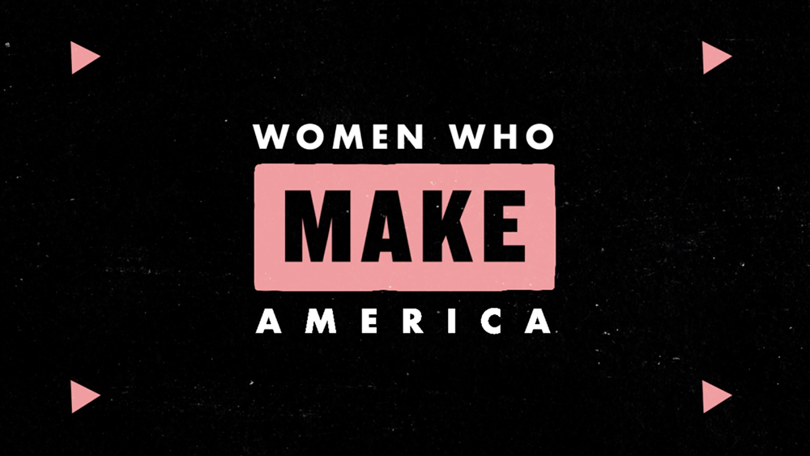
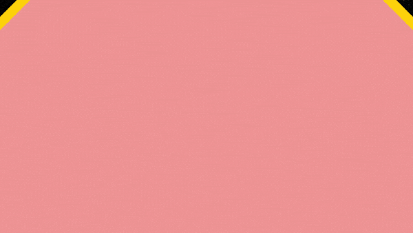
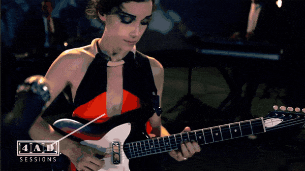
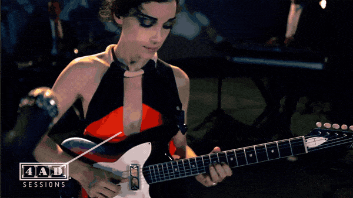
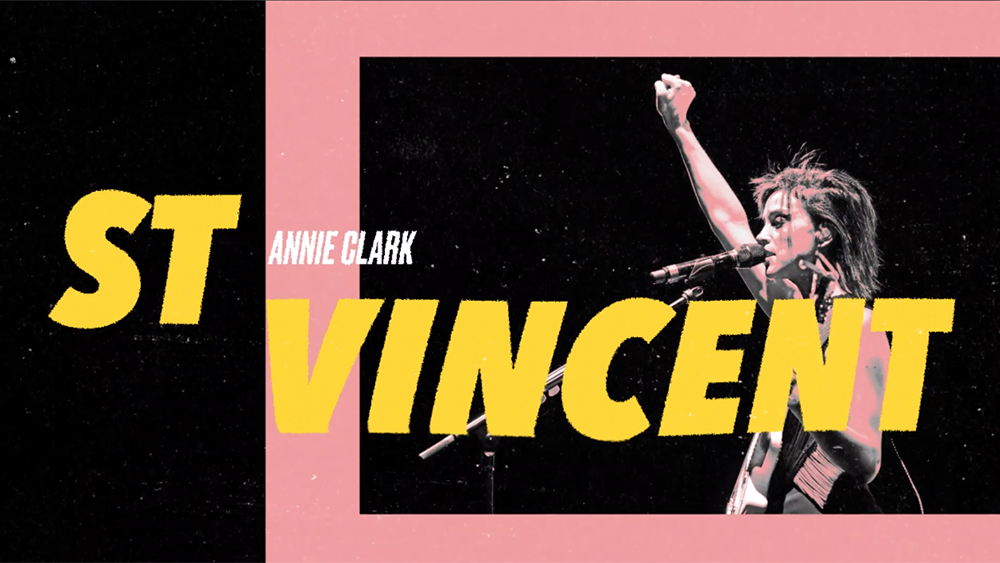
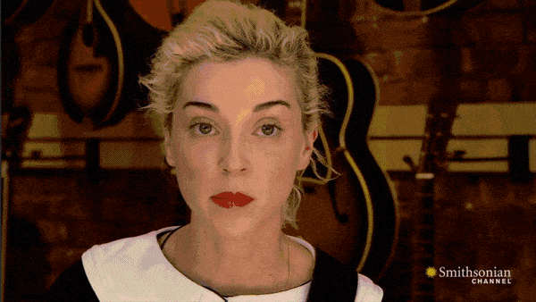
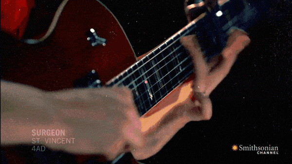
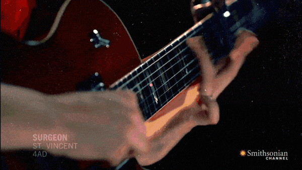

hover to see key animations
With a limited budget and timeline, I experimented with a snappy animation style supported by concert footage for this musical guest! With each entry about 8 minutes long, I wanted to keep viewer attention for the full duration of the mini-episode.
 

 
